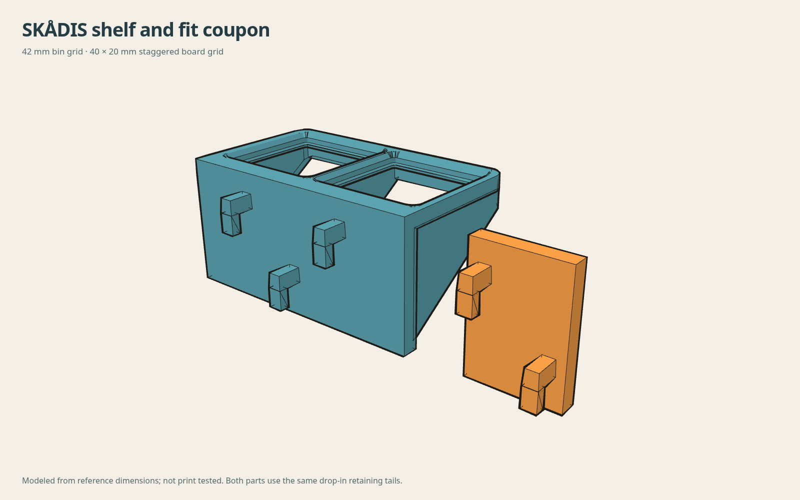

Gridfinity pegboard shelf generator
Open-bottom seats and gussets on the 42 mm Gridfinity grid. A solid backplate joins them to the selected board’s mounting grid. Downloads place the frame face on the bed.
Array and reinforcement
Up to 12 cells per direction, 64 cells total. Large arrays can take several minutes; Cancel stops the calculation. Mounts follow the selected board grid. The backplate ends flush with the frame. Gussets follow each Gridfinity cell boundary and meet the front beam, independently of the peg columns. Outer mounts remain inside the frame. The backplate is 5.4 mm thick at the connector roots.
Generated geometry
Loading geometry viewer…
Initializing local geometry engine…
SKÅDIS mounts

Backplate and Gridfinity-aligned gussets

Tilted shelves

Printing and fit

The small fit ring lets you dial in bin clearance without printing a whole shelf. Adjust the seat clearance until your bin drops in and lifts out easily.
Print with the flat frame face on the bed—the STL is already oriented that way. For the original round-hole system, one-row mounts use hooks and taller mounts add locking hoops below them. SKÅDIS uses drop-in retaining tails at every mount; support their ledges in this orientation. Use a taller backplate and thicker gussets for deeper shelves.
The earlier 1×1 and 2×1 ASA slices used 0.6 mm nozzle, 0.20 mm layers, three walls, 20% rectilinear, 12 mm³/s and 5,000 mm/s² acceleration, without brim or supports. Those slices predate the solid backplate and mounting-height options. Re-slice all newly generated shelves and inspect the result.
Download fit ring STL · Source files and measurements
Editable CAD and source
FreeCAD generator source with peg-fit controls for the original round-hole system exports native STEP, FCStd and STL with root-wall, connector-preservation and reference-foot checks. Save the parameters above and pass them with --config recipe.json.
SKÅDIS geometry is generated directly in the browser CAD source. The reference library and its MIT license are included. Board dimensions and changes.
The browser generator combines the exported connector meshes with parameterized seat and support solids. It checks connected-solid output, front-beam continuity, reference bin-foot clearance and retained board-side geometry before enabling downloads.
Gridfinity receiver dimensions follow Gridfinity Rebuilt. Peg geometry comes from the current peg repository. Sources and asset hashes.
Board fit feedback
Tell me which board you used and how the coupon or shelf fits. Your selected settings are included in the report.
GitHub opens a draft for you to review and submit. Nothing is sent automatically.